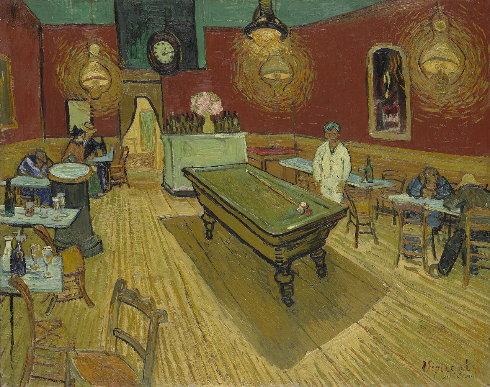
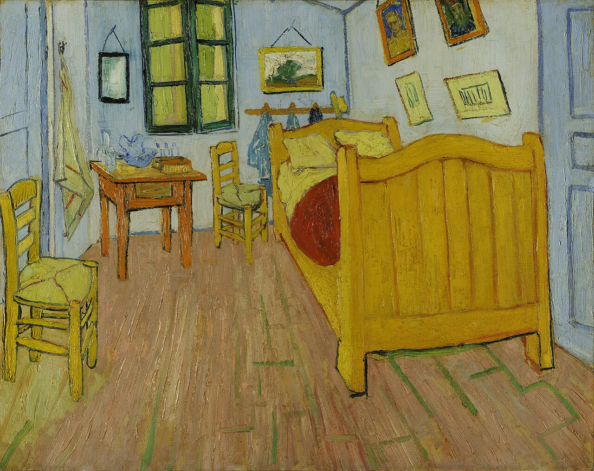

A LITTLE CLOSER · PRIVATE VIEW
把世界调静。
把目光留下。
约 5 分钟 · 两幅画 · 一个新的发现
直接入画
画中漫游 / 夜色与水面三位画家 · 一条漫游路线
THE COLLECTION / 001—006
挑一幅，走近一点。
随自己的目光走


01 / 02
YOUR LITTLE DISCOVERIES
目光走过的地方。
留下自己的观察，不急着成为别人的答案。
画外 / 雪幕
BEYOND THE FRAME
画外，下起了雪。
有些世界，要走进去才看得见。
远 ──── 近